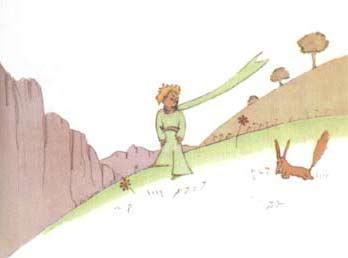
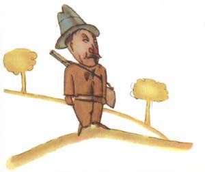
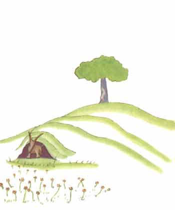

就在这当儿，跑来了一只狐狸。
“你好。”狐狸说。

“你好。”小王子很有礼貌地回答道。他转过身来，但什么也没有看到。
“我在这儿，在苹果树下。”那声音说。
“你是谁？”小王子说，“你很漂亮。”
“我是一只狐狸。”狐狸说。
“来和我一起玩吧，”小王子建议道，“我很苦恼……”
“我不能和你一起玩，”狐狸说，“我还没有被驯服呢。”
“啊！真对不起。”小王子说。
思索了一会儿，他又说道：
“什么叫‘驯服’呀？”
“你不是此地人。”狐狸说，“你来寻找什么？”
“我来找人。”小王子说，“什么叫‘驯服’呢？”
“人，”狐狸说，“他们有枪，他们还打猎，这真碍事！他们唯一的可取之 处就是他们也养鸡，你是来寻找鸡的吗？”
“不，”小王子说，“我是来找朋友的。什么叫‘驯服’呢？”
“这是已经早就被人遗忘了的事情，”狐狸说，“它的意思就是‘建立联系’。”
“建立联系？”
“一点不错，”狐狸说。“对我来说，你还只是一个小男孩，就像其他千万 个小男孩一样。我不需要你。你也同样用不着我。对你来说，我也不过是一只狐 狸，和其他千万只狐狸一样。但是，如果你驯服了我，我们就互相不可缺少了。 对我来说，你就是世界上唯一的了；我对你来说，也是世界上唯一的了。”
“我有点明白了。”小王子说，“有一朵花……，我想，她把我驯服了……”
“这是可能的。”狐狸说，“世界上什么样的事都可能看到……”
“啊，这不是在地球上的事。”小王子说。
狐狸感到十分蹊跷。
“在另一个星球上？”
“是的。”
“在那个星球上，有猎人吗？”
“没有。”
“这很有意思。那么，有鸡吗？”
“没有。”
“没有十全十美的。”狐狸叹息地说道。

可是，狐狸又把话题拉回来：
“我的生活很单调。我捕捉鸡，而人又捕捉我。所有的鸡全都一样，所有的 人也全都一样。因此，我感到有些厌烦了。但是，如果你要是驯服了我，我的生 活就一定会是欢快的。我会辨认出一种与众不同的脚步声。其他的脚步声会使我 躲到地下去，而你的脚步声就会象音乐一样让我从洞里走出来。再说，你看！你 看到那边的麦田没有？我不吃面包，麦子对我来说，一点用也没有。我对麦田无 动于衷。而这，真使人扫兴。但是，你有着金黄色的头发。那么，一旦你驯服了 我，这就会十分美妙。麦子，是金黄色的，它就会使我想起你。而且，我甚至会 喜欢那风吹麦浪的声音……”
狐狸沉默不语，久久地看着小王子。
“请你驯服我吧！”他说。
“我是很愿意的。”小王子回答道，“可我的时间不多了。我还要去寻找朋 友，还有许多事物要了解。”
“只有被驯服了的事物，才会被了解。”狐狸说，“人不会再有时间去了解 任何东西的。他们总是到商人那里去购买现成的东西。因为世界上还没有购买朋 友的商店，所以人也就没有朋友。如果你想要一个朋友，那就驯服我吧！”
“那么应当做些什么呢？”小王子说。
“应当非常耐心。”狐狸回答道，“开始你就这样坐在草丛中，坐得离我稍 微远些。我用眼角瞅着你，你什么也不要说。话语是误会的根源。但是，每天， 你坐得靠我更近些……”
第二天，小王子又来了。
“最好还是在原来的那个时间来。”狐狸说道，“比如说，你下午四点钟来， 那么从三点钟起，我就开始感到幸福。时间越临近，我就越感到幸福。到了四点 钟的时候，我就会坐立不安；我就会发现幸福的代价。但是，如果你随便什么时 候来，我就不知道在什么时候该准备好我的心情……应当有一定的仪式。”
“仪式是什么？”小王子问道。
“这也是一种早已被人忘却了的事。”狐狸说，“它就是使某一天与其他日 子不同，使某一时刻与其他时刻不同。比如说，我的那些猎人就有一种仪式。他 们每星期四都和村子里的姑娘们跳舞。于是，星期四就是一个美好的日子！我可 以一直散步到葡萄园去。如果猎人们什么时候都跳舞，天天又全都一样，那么我 也就没有假日了。”
就这样，小王子驯服了狐狸。当出发的时刻就快要来到时：
“啊！”狐狸说，“我一定会哭的。”
“这是你的过错，”小王子说，“我本来并不想给你任何痛苦，可你却要我驯 服你……”
“是这样的。”狐狸说。
“你可就要哭了！”小王子说。
“当然罗。”狐狸说。
“那么你什么好处也没得到。”
“由于麦子颜色的缘故，我还是得到了好处。”狐狸说。
然后，他又接着说。
“再去看看那些玫瑰花吧。你一定会明白，你的那朵是世界上独一无二的玫 瑰。你回来和我告别时，我再赠送给你一个秘密。”
于是小王子又去看那些玫瑰。
“你们一点也不象我的那朵玫瑰，你们还什么都不是呢！”小王子对她们说。 “没有人驯服过你们，你们也没有驯服过任何人。你们就象我的狐狸过去那样， 它那时只是和千万只别的狐狸一样的一只狐狸。但是，我现在已经把它当成了我 的朋友，于是它现在就是世界上独一无二的了。”
这时，那些玫瑰花显得十分难堪。
“你们很美，但你们是空虚的。”小王子仍然在对她们说，“没有人能为你 们去死。当然罗，我的那朵玫瑰花，一个普通的过路人以为她和你们一样。可是， 她单独一朵就比你们全体更重要，因为她是我浇灌的。因为她是我放在花罩中的。 因为她是我用屏风保护起来的。因为她身上的毛虫（除了留下两三只为了变蝴蝶 而外）是我除灭的。因为我倾听过她的怨艾和自诩，甚至有时我聆听着她的沉默。 因为她是我的玫瑰。”

他又回到了狐狸身边。
“再见了。”小王子说道。
“再见。”狐狸说。“喏，这就是我的秘密。很简单：只有用心才能看得清。 实质性的东西，用眼睛是看不见的。”
“实质性的东西，用眼睛是看不见的。”小王子重复着这句话，以便能把它 记在心间。
“正因为你为你的玫瑰花费了时间，这才使你的玫瑰变得如此重要。”
“正因为你为你的玫瑰花费了时间……”小王子又重复着，要使自己记住这些。
“人们已经忘记了这个道理，”狐狸说，“可是，你不应该忘记它。你现在 要对你驯服过的一切负责到底。你要对你的玫瑰负责……”
“我要对我的玫瑰负责……”小王子又重复着……